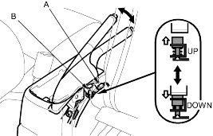
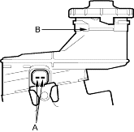
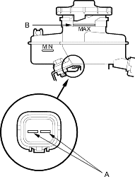

- Remove the console and disconnect the connector (A) from the switch (B).

- Check for continuity between the positive terminal and body ground:
- With the brake lever up, there should be continuity.
- With the brake lever down, there should be no continuity.
- Remove the brake fluid completely from the reservoir.
With the float down, there should be continuity. - File the reservoir with brake fluid to MAX (upper) level (B). With the float up, there should be no continuity.
4-door:

5-door:
